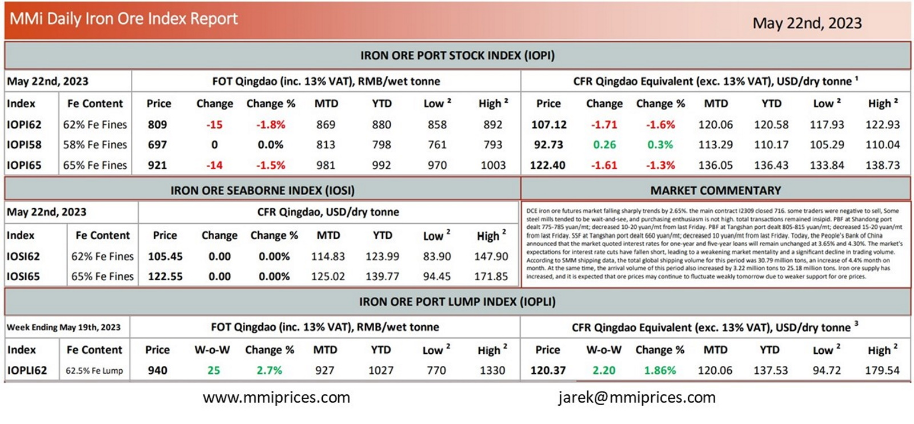

DCE iron ore futures market falling sharply trends by 2.65%. the main contract I2309 closed 716. some traderswere negative to sell, Some steel mills tended to be wait-and-see, and purchasing enthusiasm is not high. total transactions remained insipid. PBF at Shandong port dealt 775-785 yuan/mt; decreased 10-20 yuan/mt from last Friday. PBF at Tangshan port dealt 805-815 yuan/mt; decreased 15-20 yuan/mt from last Friday. SSF at Tangshan port dealt 660 yuan/mt; decreased 10 yuan/mt from last Friday. Today, the People’s Bank of China announced that the market quoted interest rates for one-year and five-year loans will remain unchanged at 3.65% and 4.30%. The market’s expectations for interest rate cuts have fallen short, leading to a weakening market mentality and a significant decline in trading volume. According to SMM shipping data, the total global shipping volume for this period was 30.79 million tons, an increase of 4.4% month on month. At the same time, the arrival volume of this period also increased by 3.22 million tons to 25.18 million tons. Iron ore supply has increased, and it is expected that ore prices may continue to fluctuate weakly tomorrow due to weaker support for ore prices.

Download PDFSource: Metals Market Index (MMi)